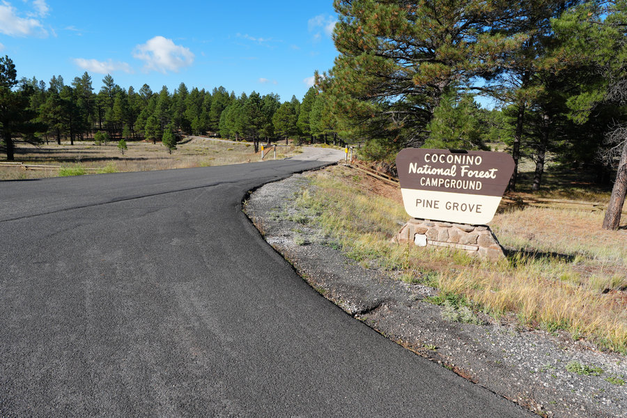
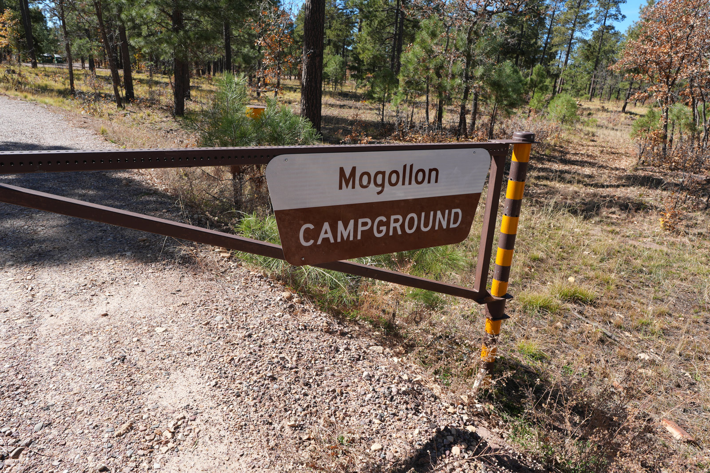

Woods Canyon Lake Campground
Popular for a reason: pines, water, cooler air, and enough summer-camp payoff to justify the Phoenix escape drive.
 By Chris Follin
By Chris FollinSUMMER ESCAPE
Start with a destination forecast that works for the whole group, then compare shade, overnight comfort and the drive. Higher country is a shortlist—not a guarantee of a safe escape from Phoenix heat.
A cooler night matters, but so do the hours spent driving, unloading and sitting outside. Rule out unsuitable daytime conditions first; then use these camp reports to compare the remaining options.
Elevation and a cooler night can improve a trip, but they do not make a dangerous afternoon safe. Check the current forecast, heat alerts, air quality and road conditions for the actual site—not Phoenix alone. Trees, lake access and a high-elevation label are not safety guarantees.
CDC heat-health guidance covers staying cool, hydration, symptoms and planning for people at higher risk.
Popular for a reason: pines, water, cooler air, and enough summer-camp payoff to justify the Phoenix escape drive.

A better fit when you want shade, creek energy, and less of the exposed dry-loop feeling that makes summer camp feel dumb.

The White Mountains answer when the whole point is getting a real reset, not just shaving a few degrees off the afternoon.

Simple, shaded, and useful when you want a straightforward high-country base instead of chasing a perfect postcard.

A practical Flagstaff-area pick when shade and cooler evenings matter more than finding some secret campsite.

Not exotic, which is partly the point. It works when the goal is a cooler, cleaner weekend without making camp complicated.
Compare the daytime high, overnight low, heat alerts and storm forecast for each destination. Then check shade, water availability and how easily the group can reach reliable cooling or leave.
| Camp | Best Summer Role | Drive Logic | Cooling Help | Watch For | Choose When |
|---|---|---|---|---|---|
| Woods Canyon Lake | Classic Rim lake escape | Worth it when you can reserve early and leave before traffic stacks up | Pines, lake time, and high-country nights | Weekend crowds, fast weather changes, busy lake access | You want the proven Phoenix heat escape and can handle popularity |
| Sharp Creek | Shadier Payson-area camp | Useful for shorter one-night trips when the Rim is overkill | Creek-adjacent shade and a less exposed campground feel | Tighter pads, bugs, and less temperature drop than higher country | You want shade and water sound more than a long drive |
| Pacheta Lake | Maximum cooling return | Longer White Mountains push; treat it like a real trip, not an after-work dash | Higher elevation, lake setting, and cooler night potential | Primitive logistics, permit planning, long drive, limited backup | Phoenix is brutal and you want the strongest reset on this list |
| Dairy Springs | Flagstaff pine basecamp | Good when the I-17 drive is manageable and lake access is not required | Ponderosa shade and high-country evenings | Mormon Lake area crowds, monsoon mud, and less water payoff | You want a straightforward shaded camp more than a lake weekend |
| Pinegrove | Easy Flagstaff-area structure | Fits trips where simple developed camping beats chasing dispersed sites | Trees, cooler nights, and Lake Mary corridor access | Reservation pressure, road noise pockets, and busy summer weekends | You want a familiar high-country setup with less guesswork |
| Mogollon Campground | No-drama Rim basecamp | Works when you want a cooler developed site without over-planning | Rim elevation, seasonal potable water, and simple loops | Not much drama on its own; lake access still takes effort | You want reliable shade-country camping, not a destination campground |
The clean decision is how much heat relief you need to justify leaving Phoenix at all.
SHORTEST CLASSIC ESCAPE
Choose: you want pines, lake activity, and a familiar Rim answer. Skip: the weekend only works if you avoid people or book at the last minute.
SHADIER QUICKER TRIP
Choose: you want a shorter drive, shade, and creek-country feel. Skip: Phoenix is dangerously hot and you need the biggest overnight temperature drop.
MAXIMUM RESET
Choose: the trip is worth a longer drive, rougher logistics, and permit planning. Skip: you need easy services, fast arrival, or a low-effort fallback.
FLAGSTAFF SHADE
Choose: you want high-country pines, cooler evenings, and a developed base. Skip: water is the main point or monsoon mud is in the forecast.
SIMPLE RIM BASE
Choose: you want a clean, cooler, developed weekend without turning planning into a project. Skip: you need the campground itself to be the whole reason for the trip.
STAY HOME TEST
Choose: the full-day forecast works for the group and allows comfortable sleep. Skip: the low is still miserable, storms look ugly, or the plan depends on shade doing elevation's job.